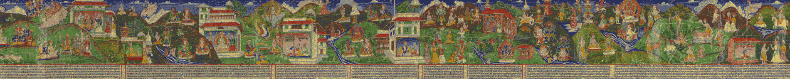
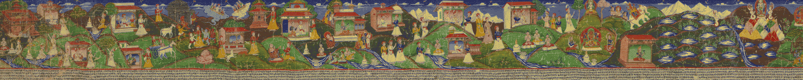
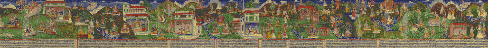
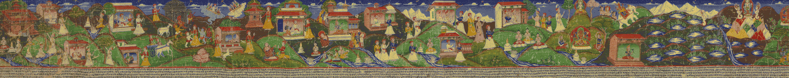
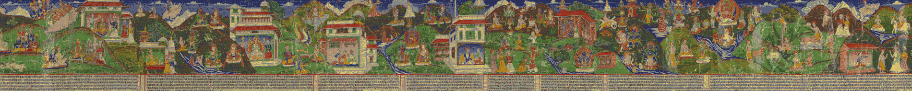
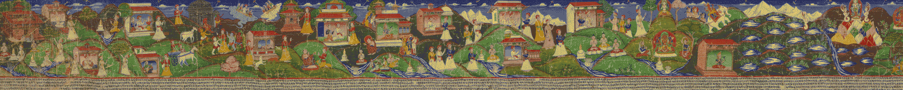
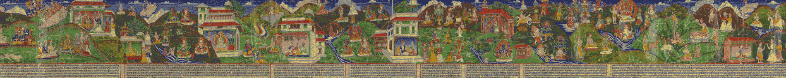
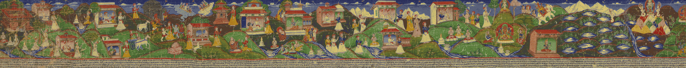

Jinah Kim, Professor of History of Art & Architecture
The Kathmandu valley, which was designated as “nepāla maṇḍala” in historical records and constituted “Nepal” until 1769, has been a highly creative center in the imagined periphery that was part of the Indic cultural region since 400 CE. The late Malla period (1482—1769 CE) followed by the Shah period (1769—2008 CE) witnessed vibrant cultural developments that indicate constant conversations with political and cultural centers in the neighboring regions. Yet, Nepal is rarely centrally situated in the discussion of early modern history or connected “global” history. Buried under the perpetuating image of insularity, Nepal seems doubly jeopardized to remain in the periphery or in-between and historically backward. The proposed symposium explores the place of Nepal in the interconnected history of Asia, especially from the fifteenth century onwards.
The Nepal Mandala Symposium coincides with an NEH sponsored exhibition on Nepalese Buddhist art, “Dharma and Puṇya: Buddhist Ritual Art of Nepal” (Cantor Art Gallery, Fall, 2019), which brings together many lesser known objects of the Malla period and the Shah period, it will provide an opportunity to examine the questions of modernity and globality in the study of Nepal’s art and culture. The call to explore more trans-regional connections must be pursued along with deeper historical inquiries into the unique cultural matrix of the Kathmandu valley. To this end, the symposium brings together scholars of religion, anthropology, and art history whose work examines critically various aspects of Nepal’s culture and history.
Harvard University Asia Center Lakshmi Mittal & Family South Asia Institute Harvard University Department of History of Art & Architecture College of the Holy Cross